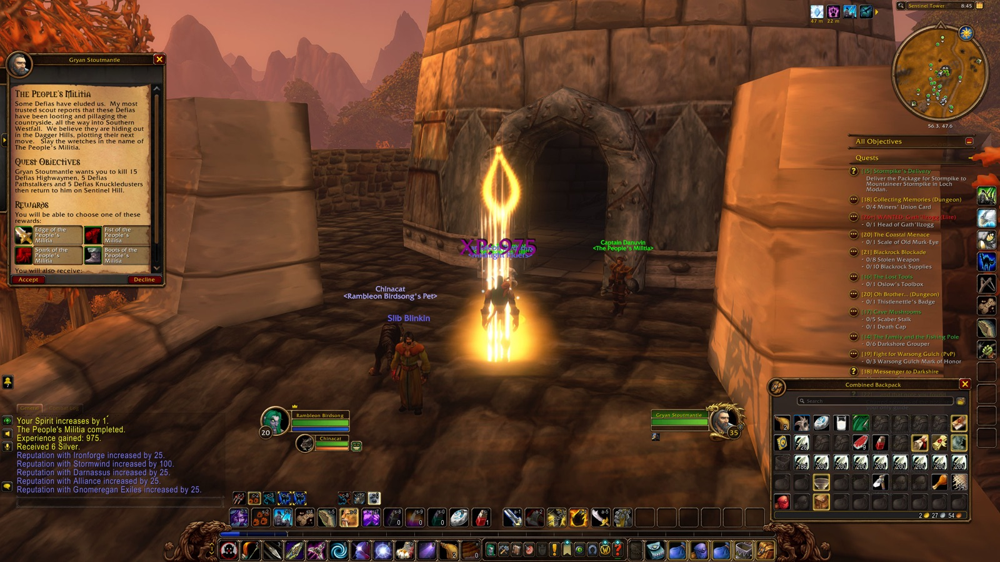

Rambleon Birdsong: the season so far
Night Elf Hunter · Alliance · Level 14 to 20, 4 nights, 20h 12m played, November 7, 2026 to November 10, 2026. · a night is still in progress

Reached Level 20 in Sentinel Tower
4Nights
56Quests
905Enemies slain
26Deaths
10Places
57Loot
60Discoveries
0Notes
30Pictures
The road
Level 19 took the longest: 3h 51m. Level 16 went by in 1h 48m.
- Level 15 November 7, 2026, Auberdine (a quest turned in) · Chapter 1
- Level 16 November 7, 2026, Mist's Edge (a kill) · Chapter 1
- Level 17 November 7, 2026, Auberdine (a quest turned in) · Chapter 1
- Level 18 November 8, 2026, Grove of the Ancients (a kill) · Chapter 2
- Level 19 November 8, 2026, Sentinel Tower (a quest turned in) · Chapter 2
- Level 20 November 9, 2026, Sentinel Tower (a quest turned in) · Chapter 3
Firsts
9 first times, in the order they came.
- Level 15First deathDarkshoreChapter 1
- Level 15First discoveryTower of AlthalaxxChapter 1
- Level 15First companionSteezChapter 1
- Level 15First flightto Auberdine, DarkshoreChapter 1
- Level 19First dungeonDeadminesChapter 2
- Level 19First bossRhahk'ZorChapter 2
- Level 19First rare itemDull SawbladeChapter 2
- Level 19First homeLakeshireChapter 2
- Level 20First elite slainDefias WatchmanChapter 3
Deaths
Died 26 times, 10 of them in Darkshore.
Where
Darkshore10
The Deadmines6
Westfall5
Ashenvale3
Redridge Mountains2
What did it
the record doesn't say6
Dark Strand Fanatic5
Riverpaw Mongrel2
Voidwalker Minion2
Dark Strand Adept1
Defias Highwayman1
Enemies
905 enemies slain; Defias Miner most often, 83 times.
Defias Miner83
Defias Strip Miner53
Defias Pirate48
Wrathtail Wave Rider30
Grizzled Thistle Bear29
Where the time went
Lingered longest in Darkshore: 5h 50m of 20h 12m.
Darkshore5h 50m
Westfall4h 02m
The Deadmines2h 49m
Ashenvale2h 28m
Stormwind City2h 23m
Redridge Mountains2h 06m
Elwynn Forest23m
Ironforge2m
When you played
Most often around 9 PM.
midnight6 AMnoon6 PMmidnight
Company
Travelled with 17 people; Cassidy the longest, 13h 01m over 3 nights.
| Who | Together | Nights | First met |
|---|
| Cassidy (Druid) | 13h 01m | 3 | November 7, 2026 · Chapter 1 |
| Vaowyn (Priest) | 7h 43m | 3 | November 7, 2026 · Chapter 1 |
| El (Hunter) | 6h 46m | 3 | November 7, 2026 · Chapter 1 |
| Johanson (Hunter) | 2h 20m | 1 | November 9, 2026 · Chapter 3 |
| Billy (Druid) | 1h 22m | 1 | November 8, 2026 · Chapter 2 |
| Assymptom (Druid) | 54m | 1 | November 7, 2026 · Chapter 1 |
| Moderate (Druid) | 12m | 1 | November 7, 2026 · Chapter 1 |
| Steez (Hunter) | 11m | 1 | November 7, 2026 · Chapter 1 |
Chapters
4 chapters, oldest first.
↑ Back to top